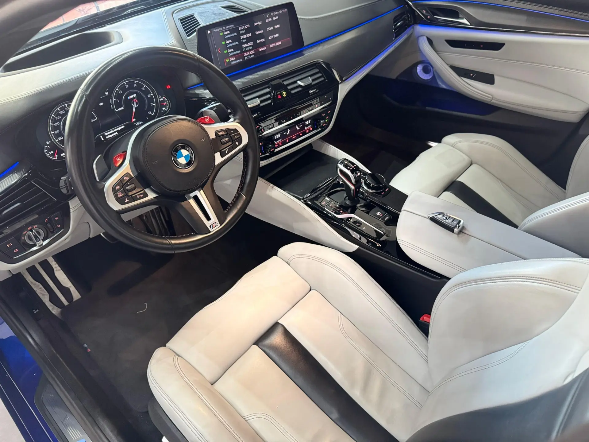
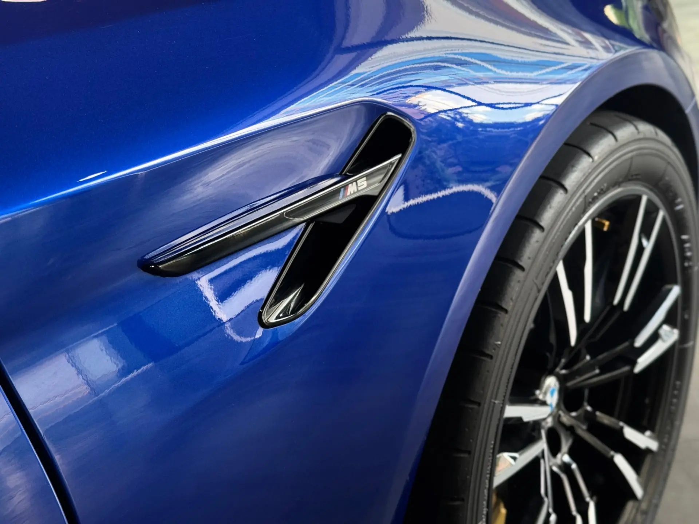
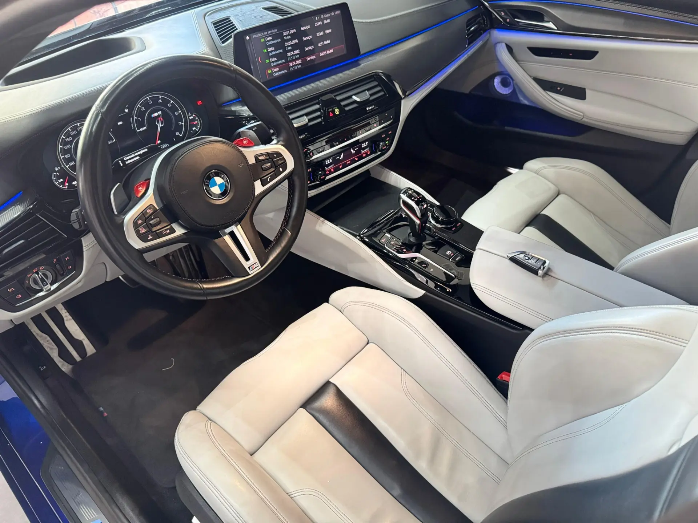
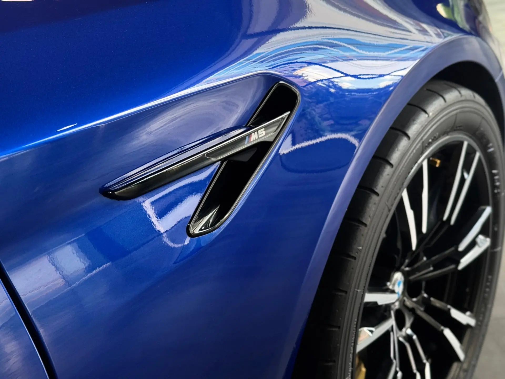

BMW M5 CS

 



Ficha técnica completa
- Motor: 4.4 L V8 Biturbo
- Potência: 635 cv
- Torque: 750 Nm
- Câmbio: Automático 8 velocidades
- Tração: Integral (AWD)
- 0–100 km/h: 2.9 s
- Velocidade máxima: 305 km/h
- Peso: ~1.950 kg
- Consumo médio: 6–9 km/l (cidade/estrada)
Dados principais
4.4 V8 | 635 cv | R$ 1.200.000
Descrição
O BMW M5 CS é a versão mais extrema do M5: foco em desempenho sem perder o refinamento de um sedã de luxo. Suspensão recalibrada, componentes em fibra de carbono e bancos esportivos garantem pilotagem agressiva e conforto.